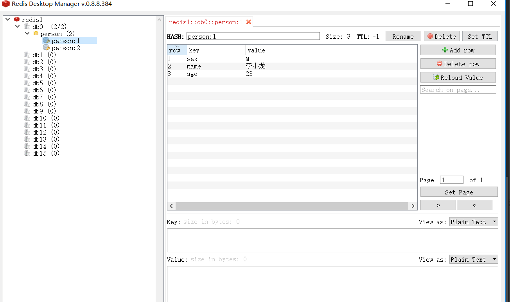
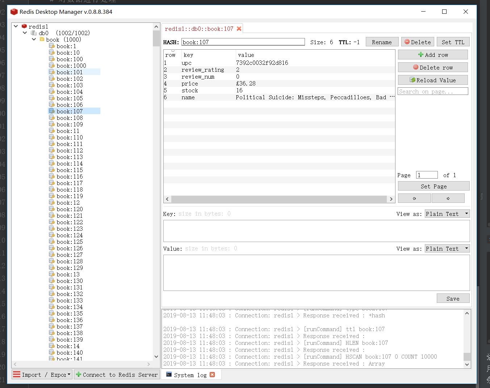

Contents
22.3.13. 数据库：Redis篇¶
1.安装：https://github.com/MicrosoftArchive/redis/releases
2.Redis可视化工具：https://redisdesktop.com/download
3.第三方库采用redis
py -3 -m pip install redis
4.简单的测试小脚本
conn_Redis.py
#!/usr/bin/env python
# -*- coding:utf8 -*-
# auther; 18793
# Date：2019/8/13 10:41
# filename: conn_Redis.py
import redis
# 连接Redis，得到一个客户端对象
r = redis.StrictRedis(host='localhost', port=6379, db=0)
p1 = {
'name': '李小龙',
'age': 23,
'sex': 'M',
}
p2 = {
'name': '乔丹',
'age': 23,
'sex': 'M',
}
# 将数据保存到Redis中
r.hmset('person:1', p1)
r.hmset('person:2', p2)
# 关闭链接
r.connection_pool.disconnect()
在redis文件夹下以管理员身份直接打开“redis-cli.exe”，输入
KEYS person:* :可以查看到有两条数据。
使用Redis Desktop Manager更直观，
连接Redis Server时Host为“127.0.0.1”，port为“6379”，name自己按照喜好填写即可。
如图所示 
5.实现1000条数据的导入，与前面设置相似。
pipelines.py
import redis
from scrapy import Item
class RedisPipeline(object):
# 打开数据库
def open_spider(self, spider):
db_host = spider.settings.get('REDIS_HOST','localhost')
db_port = spider.settings.get('REDIS_PORT',6379)
db_index = spider.settings.get('REDIS_DB_INDEX',0)
self.db_conn = redis.StrictRedis(host=db_host,port=db_port,db=db_index)
self.item_i = 0
# 关闭数据库
def close_spider(self, spider):
self.db_conn.connection_pool.disconnect()
# 对数据进行处理
def process_item(self, item, spider):
self.insert_db(item)
return item
# 插入数据
def insert_db(self, item):
if isinstance(item,Item):
info = dict(item)
self.item_i += 1
self.db_conn.hmset('book:{}'.format(self.item_i),info)
setting.py
REDIS_HOST = 'localhost'
REDIS_PORT = 6379
REDIS_DB_INDEX = 0
ITEM_PIPELINES = {
'books.pipelines.BooksPipeline': 300,
'books.pipelines.RedisPipeline': 404,
}
运行cmd命令：scrapy crawl books，用Redis Desktop
Manager显示了1000条结果
如下图所示 
也可以打开redis_cli.exe来进行查询
keys book:*
keys book:1
hgetall book:1
hgetall book:2